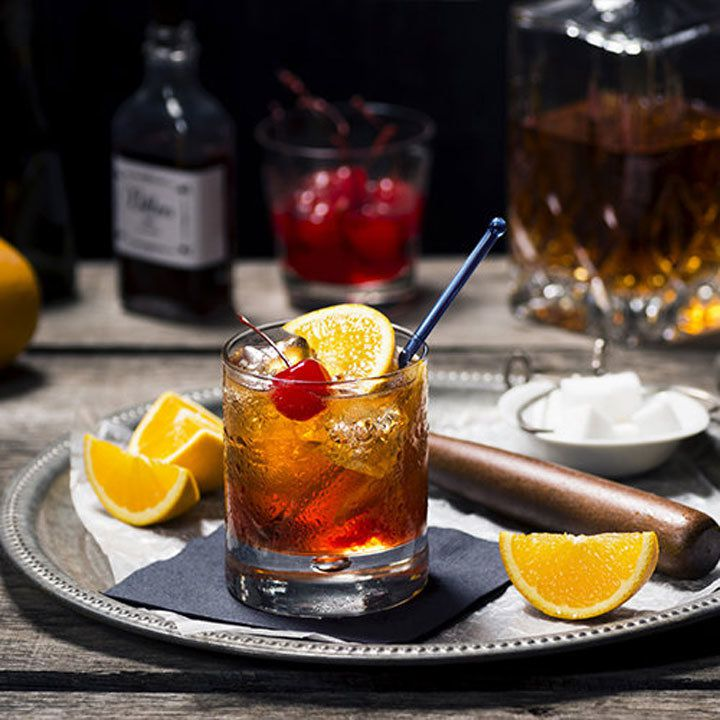

The Old Fashioned

A simple Bourbon cocktail that Ron Swanson would deem adequate.
Ingredients:
- 1/2t sugar
- 3 dashes Angostura Bitters
- 1t water
- 2oz. Bourbon
- flamed orange peel twist
- Maraschino cherry
- ice cubes (optional)
Directions:
- Place sugar cube in old fashioned glass
- Wet sugar with bitters & water
- Crush sugar with muddler
- Fill glass with ice (if desired)
- Add Bourbon and stir gently
- Twist orange peel oils over glass
- Garnish with skewered cherry and orange slice
- Serve